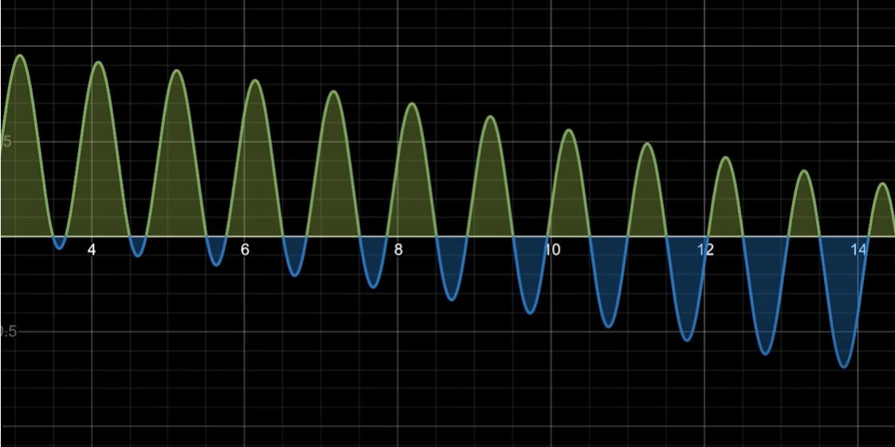
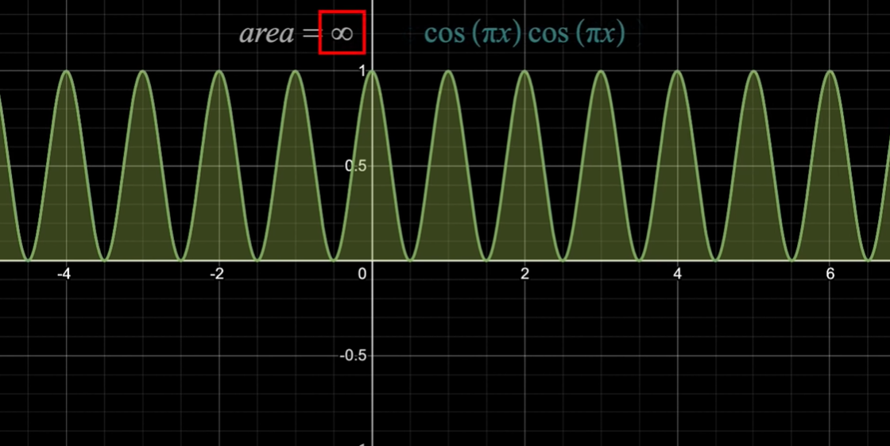

Example of our system
The cosine function is our signal we are applying the Fourier Transform to. We can see that when we multiply by another cosine function that isn't equal to the signal, the area under the curve of the product will appraoch zero. This is because the area above the x-axis is equal to the area below the x-axis. This becomes less apparent for functions that less periodic.
The output above shows how some of the outputs can be decieving because if we were to pan left in the graph we would see values almost all above the x-axis and if we pan right in the graph we would see values almost entirely below the x-axis.
When the functions are the same the area of the curve is always above the x-axis, thus, the area approaches infinity over time. This is why in our project it was crucial to center the data about the x-axis.